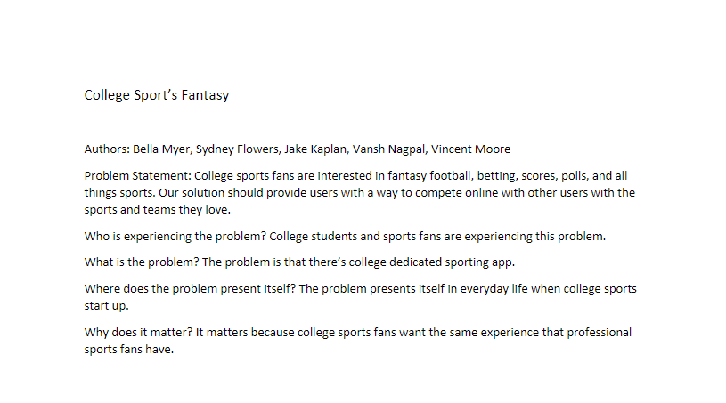
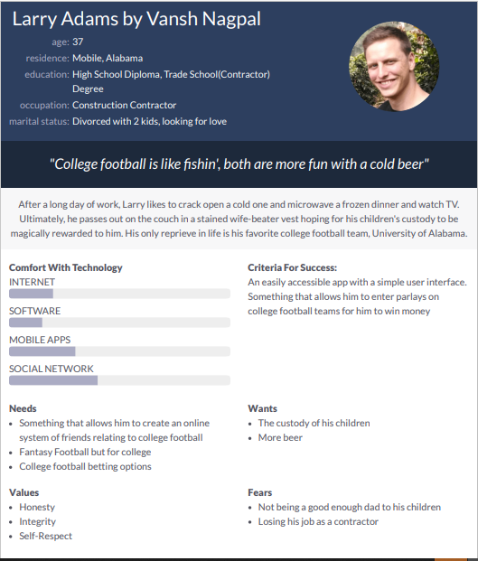

Problem Statement: College Sports Fantasy
College sports fans are interested in fantasy football, betting, scores, polls, and all things sports. Our solution should provide users with a way to compete online with other users with the sports and teams they love.
Affinity Diagram: College Sports Fantasy
 =
=
My group and I collaborated to come up with all things related to our app idea(college sports fantasy betting.)
Persona: 5 Personas for College Sports Fantasy
Personas of typical CSF app users
Storyboard: Each Persona's Experience with CSF

Each of our persona's unique experience with CSF each with humorous plots.
Sketches: Group's Proposed Prototype
Our group sketched potential visual representations of our potential app's multiple screens.
Paper Prototype
Tangible articulation of our ideas of how the app should look and function, on paper.
Hi-Fi Prototype

An actual prototype of how our app would function.